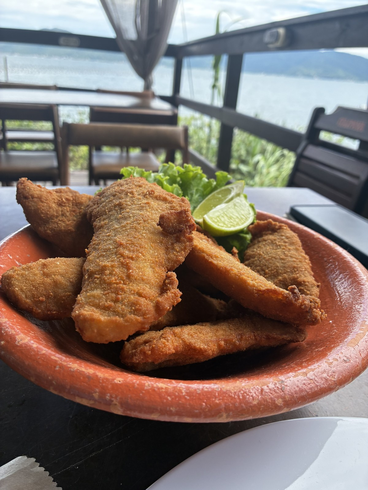

＋ abrir
＋ abrir
PARADA 01
A saída da Caieira
Sem marina, sem burocracia: o embarque é na areia da Caieira da Barra do Sul, o ponto mais ao sul onde ainda dá pra chegar de carro.

O barco sai da praia mesmo — colete, recado rápido do piloto, e proa pro sul. Toque em qualquer foto pra abrir o que acontece ali.
Os horários de cada parada abaixo servem só pra dar noção do ritmo — na prática, eles variam de acordo com a agenda do dia e o guia ajusta o passeio na hora.
＋ abrir
Sem marina, sem burocracia: o embarque é na areia da Caieira da Barra do Sul, o ponto mais ao sul onde ainda dá pra chegar de carro.
 ＋ abrir
＋ abrir
O barco contorna o costão e para de frente pro farol. É aqui que o guia começa a contar as histórias da pesca da tainha e da vida manezinha nessa ponta da ilha.
Mar aberto, e no meio dele uma ilha com ruínas de pedra em cima. O barco encosta devagar enquanto o piloto conta a história — do jeito que ouviu, não do jeito que leu.
Uma hora ancorado numa prainha que quase ninguém conhece, de frente pra Ilha do Papagaio. Água transparente, fundo de pedra, tempo pra entrar e ficar.

＋ abrirPassando pela Praia do Sonho e pelas fazendas de ostras, a rota chega numa praia praticamente particular. Duas horas ali: peixe fresco no Pedras Altas Beach, ou seu próprio lanche na sombra.
 ＋ abrir
＋ abrir
O retorno não repete o caminho: o barco corta direto pelo mar aberto de volta pra Caieira. É o trecho mais rápido do dia — e o mais provável de acontecer o que vem a seguir.
Golfinhos vivem nessa parte do mar e às vezes acompanham a embarcação no trajeto de volta. Ninguém chama, ninguém alimenta, ninguém encena.
Não é atração do passeio e não tem como prometer: pode ser que apareçam, pode ser que não. Depende do dia, da maré e de um bocado de sorte. Quando dá certo, é assim que é.
Escolhe a data, diz quantas pessoas, e a gente confirma no WhatsApp.
Rod. Baldicero Filomeno, 20255 · Ribeirão da Ilha, Florianópolis - SC
Abrir no Google MapsO traçado abaixo não é ilustração: veio do GPS do próprio barco, ponto a ponto, e foi conferido pelo Rafael antes de virar desenho.
Acompanhe o barquinho: ele faz o dia inteiro em 38 segundos.

Escolhe a data, diz quantas pessoas, e a gente confirma no WhatsApp.
a mensagem já vai pronta — é só enviar